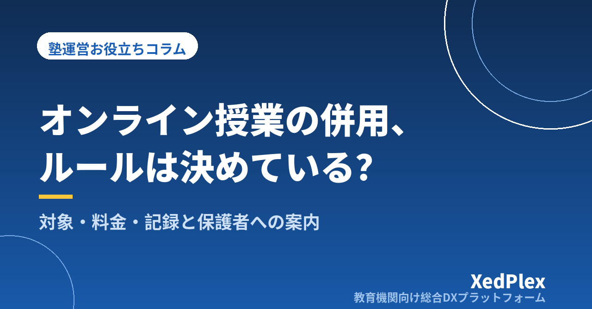

個人塾でオンライン授業を併用するときの決め方｜対象・ルール・準備と保護者への案内を型にする

夕方に保護者から「熱は下がったけれど、念のため今日は家からオンラインで受けられますか」と連絡が来る。断るのも悪いと思い、急いでビデオ通話をつないだものの、音声が途切れ、ノートの字は画面越しに読めず、授業は予定の半分しか進まなかった──。対面の塾でも、こうした「今日だけオンライン」の依頼に、その場の判断で応えている塾長は少なくありません。
オンライン授業は、体調不良や悪天候の日、送迎が難しい家庭にとって心強い選択肢です。一方で、ルールがないまま始めると、授業の質や料金の扱いがその都度変わり、かえって塾長の負担が増えます。この記事では、対面を基本にしながらオンラインを併用するときに、どんなときに使うか・何を決めておくか・どう準備して保護者に伝えるかを、小さな塾の実務に沿って整理します。
併用が「なんとなく」で始まると起きる3つのこと
依頼のたびに個別に対応していると、次のようなことが起きやすくなります。
- 家庭ごとに扱いがばらばらになる：ある家庭には通常授業として、別の家庭には振替として対応する。あとから「うちはなぜ振替扱いなのか」と聞かれても、理由を説明できません。
- 授業の質と記録が落ちる：接続の不安定さや手元の見えにくさで、進度が遅れがちになります。さらに、教室にいないため出欠や授業内容の記録が漏れ、次の授業の担当者に引き継がれないこともあります。
- 連絡が講師個人に流れる：急いで通話をつなぐために、講師の個人アカウントで保護者や生徒とやりとりしてしまう。これは連絡を講師個人に頼る問題と同じで、管理の外に情報が散らばります（「塾の保護者連絡、講師の個人LINE頼みは危険？」参照）。
どれも、オンライン授業そのものの問題というより、使う場面と扱いを先に決めていないことが原因です。
まず「どんなときにオンラインにするか」を決める
オンラインを「いつでも選べる受講方法」にするのか、「来られない日の代わり」に限るのかで、決めるべきことが変わります。小さな塾では、対面を基本にして、場面を絞って認める形のほうが運営しやすいでしょう。よくある場面と扱いの例を整理します。
| 場面 | よくある依頼 | 扱いの例 |
|---|---|---|
| 体調が万全でない日 | 熱は下がったが、念のため家から受けたい | 前日または当日の決めた時刻までの申し出で、その日の授業をオンラインで実施 |
| 悪天候・休講の日 | 台風や大雨で教室を閉めるが、授業は進めたい | 休講判断と同時に、希望者はオンラインで実施するかを案内 |
| 送迎や距離の事情 | 家族の都合で、決まった曜日だけ通えない | 期間と曜日を決めて定期的にオンラインで受講 |
| 授業外の短い補習・質問 | テスト前に1問だけ聞きたい | 授業とは分け、質問の受け付け方を別に決める |
休講時の判断や連絡の流れは「台風・災害・感染症で休講するとき、塾はどう決める？」、体調不良時の対応は「塾で生徒が体調不良・けがをしたときの対応手順」もあわせてご覧ください。体調が悪い日に無理に受講させないことも、ルールの前提として伝えておくと安心です。
最初に決める6項目のルール
場面を決めたら、次の6項目を1枚にまとめます。それぞれ1〜2文で十分です。
- 申し出の方法と期限：「授業開始の○時間前までに、塾の窓口へ」など、受け付ける経路と締め切りを決めます。直前の依頼には対応しない、と線を引くことも大切です。
- 授業としての扱い：オンラインで実施した授業を通常の1回として数えるのか、振替の一種とするのか。欠席・振替のルールとの関係を明確にします（「塾の欠席・振替管理のルール作りと運用」参照）。
- 料金：対面と同じ料金にするのか、別に設定するのか。途中で変えると説明が難しくなるので、最初に決めて規定に書いておきます。
- 使うツールと接続確認：塾として使う通話ツールを1つに決め、塾のアカウントから案内します。初めて使う家庭とは、事前に短い接続テストを行います。
- 受講中のルール：カメラをオンにする、静かな場所で受ける、ノートや問題集を手元に用意する、などを決めます。小学生の場合は、開始時だけ保護者に立ち会ってもらうと接続トラブルに対応しやすくなります。
- 記録と報告：オンラインの日も、出欠・授業内容・次回の課題を対面の日と同じ場所に残し、保護者への報告も同じ形で行います。
授業の質を落とさない準備と進め方
教材は「先に渡しておく」
オンライン授業で時間を取られやすいのは、「そのページがない」「プリントが見えない」といった準備のずれです。使うページや問題を前日までに伝え、プリントは事前に渡すか、画面で共有できる形にしておきます。生徒の手元が見えにくい場合は、解いたノートをスマホで撮って見せてもらうなど、確認の方法も決めておきます。
授業の型を対面より細かく区切る
画面越しでは、生徒が分かっていないことに気づきにくくなります。説明→演習→確認を10〜15分ごとに区切り、区切りごとに「ここまでで分からないところは？」と聞くか、1問解いて見せてもらう時間を入れます。対面よりも小さな確認を増やすことが、進度の遅れを防ぐ近道です。
授業後3分で、対面と同じ記録を残す
オンラインの日は教室での入退室の記録が残らないため、出欠は講師が忘れずに記録します。あわせて、やったこと・つまずき・次回の課題を、対面の日と同じ形式で残します。記録の型は「塾の生徒記録（日誌）を残す習慣と活かし方」、保護者への伝え方は「保護者に伝わる塾の指導報告書の書き方」で整理しています。
保護者への案内と、やりとりを1か所にまとめる仕組み
ルールが決まったら、入塾時の案内と規定に加え、在籍家庭にはお知らせとして伝えます。たとえば次のような文面です。
当塾では、次の場合に限り、通常授業をオンラインで受講いただけるようにいたします。①体調が回復途中で来塾を控えたい日、②悪天候などで教室を休講とする日、③事前にご相談いただいた期間の定期受講。
ご希望の際は、授業開始の○時間前までに塾の連絡窓口へお申し出ください。オンラインでの授業も通常の1回として扱い、料金は対面と同じです。初めての方は、事前に5分ほど接続の確認をお願いします。授業の内容と次回の課題は、対面の日と同じ形でお知らせします。
運用を始めたら、次の3つを1か所にまとめておくと、塾長ひとりでも回しやすくなります。
- 申し出と連絡：オンライン受講の依頼、接続先の案内、当日の連絡を、塾の窓口に集めます。講師の個人アカウントは使いません。
- 出欠と授業の記録：オンラインの日も対面の日も、同じ生徒の記録として並べて見られるようにします。「ちゃんと受けているか」を保護者に見せる考え方は「『ちゃんと通っているか』を保護者に見せる塾の仕組み」もご覧ください。
- 授業外の質問：オンラインを始めると「ちょっとだけ聞きたい」が増えがちです。授業とは分けて、質問を受け付ける場所と返答の目安を決めておきます（「塾の質問対応、講師が足りなくても回る仕組み」参照）。
運用を数か月続けたら、オンラインで受けた回数と理由を振り返ります。特定の曜日や家庭に偏っている場合は、時間割や送迎の事情を見直すきっかけになります。
まとめ
対面の塾がオンライン授業を併用するときは、使う場面を絞り、扱いを先に決め、記録と連絡を対面の日と同じ場所に集めることがポイントです。体調・悪天候・送迎の事情など対象の場面を決め、申し出の方法と期限・授業としての扱い・料金・ツールと接続確認・受講中のルール・記録と報告の6項目を1枚にまとめれば、「今日だけオンライン」の依頼にも迷わず応えられます。まずは、この1か月でオンラインの依頼があった場面を書き出し、どこまで受けるかを決めるところから始めてみてください。
この記事を書いた運営より
私たちは、個人経営・小規模の学習塾向けに、生徒管理・QRコードでの入退室記録・月次請求・保護者へのLINE/メール通知・AIによる学習支援までをひとつにまとめた教育機関向け総合DXプラットフォーム「XedPlex（ゼドプレックス）」を開発・提供しています。初期費用は0円、料金は生徒1名あたり月額300円（税込）から。生徒50名の塾なら月15,000円（税込）です。全国8つの教室で導入されており、導入塾には紹介ホームページの無料作成も行っています。機能の詳細説明はこちら。
XedPlexの詳細を見る